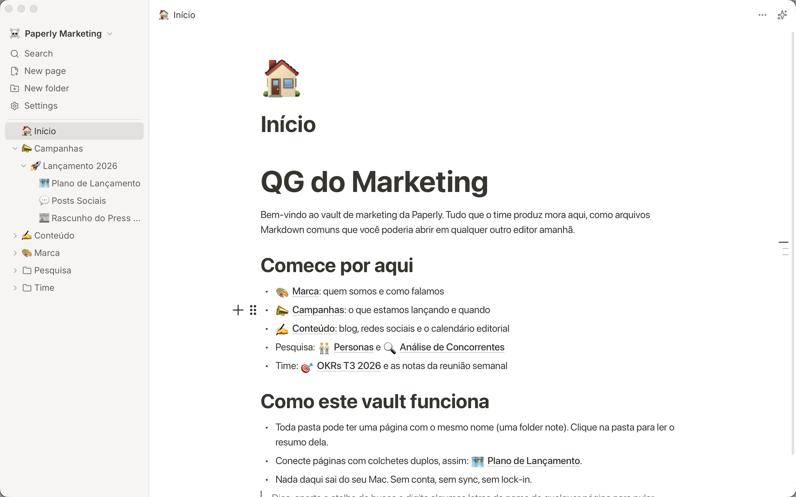

Suas notas, em arquivos que são seus.
Paperly é um app de notas Markdown local-first. Tudo vive em pastas no seu computador: sem conta, sem lock-in, e nada sai da sua máquina sem você decidir. Grátis e open source.

Como instalar no Mac
Quatro passos, menos de dois minutos. Só na primeira vez: as atualizações seguintes chegam pelo próprio app.
- Baixe o Paperly. Mac de 2020 em diante (chip M1, M2, M3...) usa o botão Baixar para Mac. Macs mais antigos, com processador Intel, usam Mac Intel.
-
Libere o arquivo no Terminal. O macOS atual bloqueia até a abertura do .dmg baixado (“não foi possível verificar se está livre de malware”). Aperte ⌘ Cmd + Espaço, digite Terminal, dê Enter, cole o comando abaixo e aperte Enter. Sem senha, sem mistério. Se o download não estiver na pasta Downloads, ajuste o caminho.
$
xattr -d com.apple.quarantine ~/Downloads/Paperly_*.dmgPor que esse comando? Todo arquivo baixado da internet ganha do macOS uma marca de “quarentena”, e o sistema só abre sem aviso o que tem o selo de notarização da Apple, que custa US$ 99 por ano pro desenvolvedor. O Paperly é gratuito e ainda não paga esse selo, então o macOS recusa até o instalador.
O comando faz uma única coisa: remove a marca de quarentena deste arquivo, dizendo ao sistema que você confia nele. O app que você arrastar de dentro dele já sai liberado, e nenhuma proteção do macOS é desativada para o resto da máquina. E como o Paperly é open source, o código que roda aí é público e auditável no GitHub.
- Instale. Agora abra o .dmg normalmente e arraste o Paperly para a pasta Aplicativos.
- Pronto. Abra o Paperly. Quando sair uma versão nova, uma pílula azul aparece no topo do app: um clique baixa, instala e reabre sozinho.
No Windows: na primeira execução o SmartScreen pode mostrar “O Windows protegeu o computador”. Clique em Mais informações e depois Executar assim mesmo; acontece só uma vez, pelo mesmo motivo acima (builds ainda não assinados).